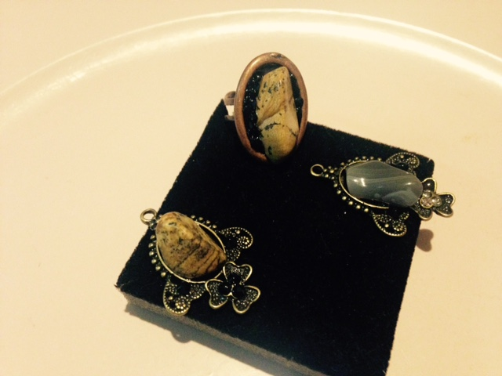
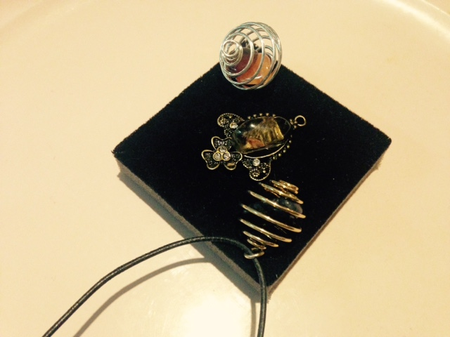
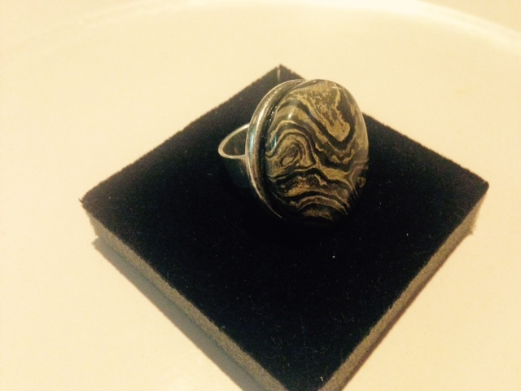
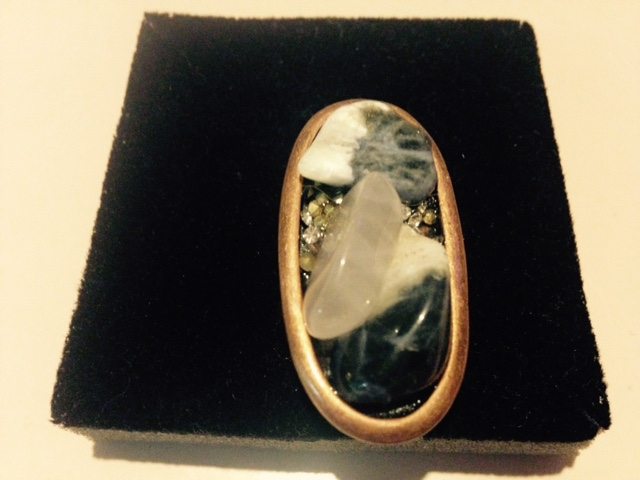
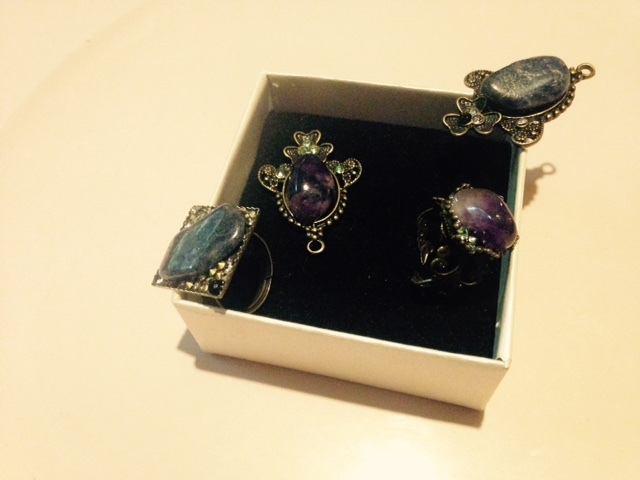
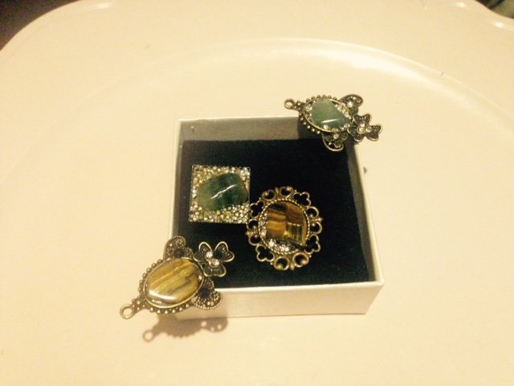
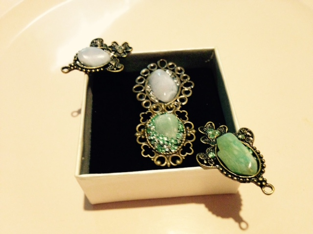

|
BIOGRAPHIE
Fille d’artiste peintre, nièce du célèbre auteur belge , Paul Van Stalle (1908-1995), auteur de la pièce de théâtre Bossemans et Coppenolle. Les aléas de la vie ne me permettent pas des études de vétérinaire comme je le rêvais donc le choix de mes formations scolaires ( la diététique sportive, la psychanalyse ) me guide vers Bruxelles où je vis aussi une vie tout en strass et paillettes : castings, défilés, photos, clips pour subvenir à mes études….
Psychothérapeute « CBF en 2004« comme formation et toujours à la recherche d’une image parfaite, (finaliste des championnats de Belgique en fitness IFBB dans les années 90, coach en fitness et nutrition ) mannequin, modèle photos, et aussi passionnée par le monde animal.
C’est en 2004 que ma vie prend un autre chemin suite au décès de maman, je refoule cette vie superficielle, d’ailleurs ma décision sera fatale : je quitte à tout jamais Bruxelles, car encore une fois je ne jouais là qu’une comédie au quotidien pour retrouver mes vraies valeurs : ma campagne, mes terres, mes chiens me suivent dans cette vie nouvelle. Mon futur est ici loin des projecteurs, j’en arrive à fuir toute obsolescence et le végétarisme avec une forte tendance "vegan" , prend place dans ma vie au quotidien et je deviens
très engagée au sujet de la philosophie antispéciste.
Je décide donc de reprendre mes outils de jeunesse la psychothérapie.
A ce jour mon « grand âge « me permet toujours de pouvoir vous accompagner dans les disciplines suivantes telles que le Yoga-stretching, la thérapie à l’écoute dont mes supports sont essentiellement le pendule et le TAROT.
Attention je suis exigeante et intransigeante si vous décidez de vous prendre en main et que nous parcourions ensemble un chemin de vie dans un but bien précis je vous demanderai une certaine rigueur.
Loin de moi l’idée de vous tenir en consultations à un rythme effréné tels certains psychanalystes le feraient, ce n’est pas mon but, ni mon rôle de tisser un « cordon ombilical » entre vous et moi bien que le phénomène du transfert doit exister. (Voir Lacan)
Mon souhait est de rendre au sujet, à ma patientèle une légèreté physique, psychologique et un bien-être total.
Ma phrase préférée « mens sana in corpore sano »
Je n’ai ni la vocation, ni la prétention de pouvoir « guérir « tous vos maux
Un chirurgien en vasculaire n’est pas pour autant un chirurgien en digestive
Le psychothérapeute tente de permettre à son patient
de comprendre les difficultés rencontrées et l’aider à les surmonter
et à y remédier. Une thérapie s’achève lorsque le mal–être physique et/ou mental se résorbe et que le patient peut affronter seul la vie quotidienne sans la « béquille » de son thérapeute.
Je peux tenter de vous aider et parfois même de guérir !….DANS VOS CHOIX DE VIE GRÂCE ET TOUJOURS A MES OUTILS TELS QUE tarot, pierres, aromathérapie ET pendule.²
1. Déséquilibres alimentaires :anorexies, boulimies
2. Les sentiments et sensations angoisses, les troubles de panique aigues
3. Le stress, l’anxiété,, la nervosité, pleurs, trac, l’émotivité incontrôlée
4. Les phobies (sociales, des transports, l’agoraphobie,
la claustrophobie, ...)
5. Les ruptures amoureuses difficiles, les dépendances affectives
6. Les problèmes affectifs et les troubles de l’émotion
7. Les troubles du sommeil
8. Les troubles de l’humeur
9. Sentiments de frustration, d’insatisfaction
10. La timidité, susceptibilité
11. Les inhibitions : introversion ou extraversion excessives
12. Le sentiment de harcèlement
13. Work-addict, love addict, Fashion victim
14. L’abandonnisme
15. L’érotomanie
16. L’associabilité
17. Rupture, divorce, deuil, séparation difficile à assumer et/ou à gérer
18. La victimisation de violence verbale, physique
POURQUOI LE YOGA LA MEDITATION
Qui dit yoga dit posture contre posture et respirations.
Le yoga a un effet bénéfique sur le mental l émotionnel le physique et sur le spirituel aussi
Il n’est jamais trop tard pour commencer à pratiquer le yoga
Il vous aidera à mincir, vous muscler, il agira sur le système digestif, vasculaire, nerveux ;
Il fortifiera votre mental, votre état émotionnel, spirituel
Je donne mes leçons de yoga , durant 1H30 ,soit chez vous si le lieu le permet, dans un centre de fitness de votre choix(Ixelles, Uccle, Waterloo, Nivelles,).
Quant au suivi thérapeutique à l’écoute, c’est toujours en mon cabinet.
Ne comptez pas sur moi pour vous élaborer des recettes de mets traditionnels, ils seront toujours VEGAN.
I've learned that people will forget what you said, people will forget what you did but people will never forget how you made them feel
***
Animals have right
La solitude n’est pas de se réveiller
Seule Au petit matin
La solitude c’est de constater
Et savoir que l’on est sans famille
Que seuls quelques amis
Sont là par moment
Mais pas pour bien longtemps
Toujours sans mari
Les tables bien garnies sont loin
Les maisons bruyantes aussi
A ce jour restent le vin, le pain
Au temps et moments choisis
La solitude est telle la maladie d’amour
Elle arrive sans prévenir
Et s’installe en un tour
Et vous ronge tout votre avenir---
J’ai toujours aimé à en mourir
J’ai souvent cherché ce prince charmant
À ce jour telle une enfant
Après vous je ne vais plus courir
Vous avez tué la naïveté de l’amour
A ce jour je ne puis plus vous aimer
Homme, Je vous crie au secours
Ne me faites plus chavirer
Chavirer ce cœur qui a trop saigné
Qui est blessé de tout ce lourd passé
Mon cœur, corps et âme
Jamais ne seront vôtre future arme
Délivrez-moi de ce fardeau
La vie ne fut pas cadeau
Mais à ce jour femme grandie
Ne vous quémandera plus la mie
-Pourquoi un Cheval ?
Je pense à un être Royal
Pourquoi un Chien ?
c’est un être si Câlin
Pourquoi se donner tant de peine ?
Car je veux par Lui fuir toute la haine
La haine de l’humanité qui me taraude
Jamais je me dirai que vous êtes une mode
Oui je vous aime comme une famille
Vous êtes là à mon réveil,
Oui je vous sublime comme mes amies
Oui vous êtes dans mes rêves, mon sommeil
Ne me dites pas tout cela juste pour un Chien
Ne vous m’éprenez pas en pensant ce n’est qu’un Cheval
Oui pour vous je me lève à l’aurore le matin
Oui grâce à vous je suis devenue loyale
Le bonheur c’est vous
Cette chaleur
Cette odeur
Je suis devenue tel un loup
Adoptez-moi tel Romulus et Rémus
Vous serez pour moi telle LA louve
S’il existait l’Angélus
Rien que pour un Chien un Cheval
Oui vous êtes à Moi comme je suis à Vous
Parents, Sœur, famille entière, une hécatombe,
Mais il y a peu de temps que je me dis ne vis plus dans l'ombre
Tu as la plus grande richesse nommée liberté au menu
Jamais je ne dois demander une permission
Patron, mari, je ne connais pas ces interdits ni l' obligation
la vraie richesse monter lorsque d'autres travaillent hélas
d'autres diront aller à la pêche pendant que d'autres sont las
d'un dur labeur d'une vie monotone sans passion
ma vie est devenue une évasion
je souhaite à tous de se réaliser dans sa vie
là est la vraie valeur infinie
La signification des pierres précieuses
Au fil des siècles, de nombreuses cultures ont contribué aux légendes et aux
traditions entourant les pierres précieuses. Ces produits rares de la nature
ont inspiré les philosophes et les personnes mystiques qui ont attribuer des
pouvoirs surnaturels à ces minéraux spéciaux.
Le meilleur recueil de légendes des pierres précieuses est sans aucun doute
ce que l'on trouve dans le livre de George Frederick Kunz "The Curious Lore
of Precious Stones" publié en 1913. Mais Kunz ne croyait pas aux cristaux
mystique. Au contraire, il a été le gemmologue de son temps et dans son rôle
d'expert résident chez Tiffany & Co. à New York, a aidé à créer le marché
moderne des pierres de couleur. Il a également contribué à rassembler
quelques-unes des plus belles collections de pierres rares , y compris la
célèbre collection JP Morgan-Tiffany, aujourd'hui au Musée américain
d'Histoire Naturelle.
Kunz croit que nous pouvons apprendre beaucoup en étudiant la façon dont les
pierres ont été utilisées par les différentes cultures et les croyances que
les gens à différents moments ont formé autour des pierres précieuses rares.
Mais pour Kunz cette étude n'était pas seulement une curiosité sociologique,
c'était un moyen de connaître les pierres elles-mêmes: "Beaucoup de ces
idées peuvent sembler assez étrange pour nous maintenant, et pourtant, quand
nous les analysons, nous trouvons qu'ils ont leurs racines soit dans une
qualité intrinsèque de la pierre ou bien dans une appréciation instinctive
de leur signification symbolique.
|
Agate
|
|
Considéré comme une pierre de protection. On pense qu'elle peut attirer la force et offrent une protection contre les mauvais rêves, le stress et le drainage de l'énergie. L'Agate aide dit-on à rééquilibrer les énergies et les talents à se réveiller.
|
|
|
Amazonite
|
|
Aurait un effet apaisant et calmant. Elle accomplit cette mission en dissipant l'énergie négative et nous permettre de laisser aller la tristesse et le chagrin.
|
|
|
Améthyste
|
|
Calme les émotions, crée de la clarté dans les pensées, et aide à atteindre la sagesse. L'améthyste est une pierre de l'esprit, elle apporte le calme et la clarté, vous aide à entrer en contact avec votre intuition, les sentiments et les vraies valeurs. Elle a longtemps été considérée comme une aide à la sobriété et donc utile pour la lutte contre l'alcool, la nourriture et d'autres dépendances. Elle calme aussi les comportements compulsifs obsessionnel.
|
|
|
Apatite
|
|
Une pierre précieuse pour la communication. On pense qu'elle aide dans le bégaiement et l'hypertension, et contribue à vaincre la tristesse et le chagrin. L'Apatite est dit-on bonne pour l'aide dans la lutte contre les virus et permet de mélanger l'ancien et le nouveau dans la vie.
|
|
|
Aigue-marine
|
|
Associés avec le courage et la libération de l'anxiété et de la peur. On dit qu'elle aide à apaiser, calmer et soulager les craintes et de contribuer à la détente sur de longs trajets. Beaucoup de gens pensent qu'elle protège les marins en mer, et empêche le mal de mer. La tradition veut qu'elle donne des aperçus et aide dans la clarté mentale.
|
|
|
Aventurine
|
|
Une pierre d'opportunité; qu'on pense bonne pour attirer la prospérité. Quelques-uns conseils de garder une aventurine dans votre poche gauche lorsque vous achetez un billet de loterie ou pour jouer à n'importe quel jeu de hasard.
|
|
|
Topaze bleue
|
|
Associés avec le courage et pour surmonter les craintes et les obstacles. C'est une pierre traditionnelle pour les écrivains, les savants, les artistes et les intellectuels, aussi utilisée pour aider aux grandes pensées. Elle aide dit-on à calmer l'angoisse mentale et à favoriser la fidélité, l'amitié, la douceur, et l'intégrité.
|
|
|
Calcédoine<
|
|
Considéré comme une pierre sacrée par les Indiens d'Amérique, la calcédoine nourrit et favorise la fraternité et la bonne volonté. La Calcédoine aide pense-t-on à atténuer l'hostilité, l'irritabilité et la mélancolie.
|
|
|
Citrine
|
|
On dit qu'elle aide à ouvrir l'esprit à de nouvelles pensées et à équilibrer l'impatience et l'agitation. La Citrine est depuis longtemps considérer comme bonne pour promouvoir l'optimisme. Elle attire également l'abondance, et est connu comme la "pierre du marchand" en étant placé là où l'on fait des affaires, non pas seulement pourra acquérir des richesses positive, mais également pour les garder. Bonne pour la concentration mentale, l'endurance et l'estime de soi.
|
|
|
Diamant
|
|
Considéré comme bon pour absorber et amplifier les pensées de son utilisateur, ainsi que les forces et les faiblesses des autres pierres précieuses et de leurs porteurs. Les anciens utilisait aussi les diamants pour la désintoxication puisqu'il il était dit qu'ils protégeaient des poisons.
|
|
|
Diopside
|
|
Pensé pour être une pierre cathartique car elle est considéré par les guérisseurs de cristal comme bonne pour guérir les traumatismes en apportant les larmes de nettoyage. La Diopside est censé favoriser la créativité et promouvoir l'amour et l'engagement.
|
|
|
Émeraude
|
|
La tradition dit que les émeraudes aident à la fertilité, améliore la vue, et donnent des pouvoirs psychiques au porteur. Considéré comme bonne pour lever la dépression et soulager l'insomnie. Elle favorise la connaissance de soi, les rêves pacifiques, et vous aide à atteindre l'équilibre et la patience.
|
|
|
Fluorite
|
|
On dit la fluorite bonne pour l'équilibre et stabiliser l'intuition. Considérée comme une aide à l'apprentissage et la pensée latérale. La Fluorite est censé améliorer la capacité de concentration.
|
|
|
Grenat
|
|
Considéré comme la pierre de la dévotion passionnée: à votre famille, à vos amis, à vous-même, et à vos buts dans la vie. Estimé bonne pour stimuler les sens, la vitalité et augmenter l'endurance. Le grenat aide, dit-on, à attirer la chance dans les entreprises.
|
|
|
Iolite
|
|
Dit-on, la pierre de la vision intérieure. Jugés utiles pour contribuer à vivre à un niveau élevé de connaissance, et utile pour l'élimination de la dette et à accroître la responsabilité financière.
|
|
|
Jade
|
|
Une pierre de sérénité. Pour dit-on apaiser l'anxiété, la peur et promouvoir la bonne chance. Le Jade apporte non seulement la prospérité, mais vous permet de conserver votre argent. Un charme traditionnel pour les jardiniers, le jade est dit-on bon pour assurer des récoltes abondantes.
|
|
|
Jaspe
|
|
Il est associé à la détente, le contentement, la compassion, l'éducation et la consolation. Le Jaspe aide à soulager le stress mental et vous aidera à atteindre l'équilibre dans votre vie.
|
|
|
Kyanite
|
|
Une pierre reposante, elle contribue à calmer le mental, à la dissolution de la confusion émotionnelle ou spirituelle. La Kyanite est dit-on particulièrement bonne pour la dissipation de la colère et de la frustration.
|
|
|
Lapis Lazuli
|
|
Une pierre antique dite pour représenter l'amitié et la vérité. Le Lapis est bon pour contribuer à l'harmonie dans les relations. C'est une pierre de sagesse et de prise de conscience.
|
|
|
Pierre de lune
|
|
Aides à la communication par la promotion de la pensée claire, l'inspiration ou la réceptivité; assiste dans l'accomplissement de son propre destin. Longtemps considérée comme la pierre des capacités psychiques, aide à l'exécution et l'équilibre des émotions, la pierre de lune est dite bonne pour aider dans l'accomplissement, mais a tendance à mieux travailler sur des choses qui sont nécessaires par rapport aux choses qui sont juste voulu.
|
|
|
Onyx
|
|
L'onyx noir est dit-on bonne pour repousser la négativité et détourner la négativité des autres.
C'est un bijou qui aide à améliorer la détermination et la persévérance.
|
|
|
Opale
|
|
Considéré comme une pierre fortement associée avec les émotions, y compris l'amour, la passion et la spontanéité. L'Opale aide à la visualisation, l'imagination, les rêves, et la guérison.
|
|
|
Péridot
|
|
Censée renforcer la vie, apporter la prospérité, la croissance et accroître l'ouverture. Le Péridot est également dit-on bon pour aider à comprendre les relations, et pour soulager la dépression, la colère, la peur, la jalousie et l'anxiété.
|
|
|
Prehnite
|
|
Un bijou d'une aura mystique, la prehnite est dit-on la pierre des rêves dont on se rappellent, la méditation et la prophétie.
|
|
|
Quartz Rose
|
|
Connu sous le nom de pierre de "l'amour doux", le quartz rose apporte la paix et le calme dans les relations. Excellent pour la guérison des blessures émotionnelles, en supprimant la négativité et en rétablissant l'harmonie après les conflits. Il favorise l'appréciation de l'art, de la musique et de la parole écrite.
|
|
|
Rubis
|
|
Célèbre en tant que protection contre le malheur et la mauvaise santé, le rubis est également utilisé pour ouvrir le cœur et pour promouvoir l'amour. Quand il est donné comme un cadeau, le rubis est un symbole d'amitié et d'amour. Le rubis est aussi un symbole de vitalité et de royauté.
|
|
|
Rutile Quartz
|
|
Il est dit-on bon pour intensifier la puissance du cristal de quartz. Le quartz de rutile est censé aider à arriver à la racine d'un problème.
|
|
|
Saphir
|
|
Longtemps associé à la paix et au bonheur, estimé pour faciliter la communication, la perspicacité, l'intuition, l'inspiration et la prière. Les anciens estiment que les saphirs aiderait à prédire l'avenir.
|
|
|
Quartz fumé
|
|
On croit que c'est la pierre naturelle de l'endurance, en favorisant la sérénité, le calme, et la pensée positive.
|
|
|
Spinelle
|
|
Alors que le spinelle a été confondue avec le rubis pendant des siècles, il n'a pas acquis la richesse de sens associée à d'autres pierres précieuses importante. Mais il est dit que le spinelle aide à la détente et à la relaxation. Parce que le spinelle est l'un des rares joyaux à réfraction unique, il a une pureté de couleurs qui peuvent être la base de sa signification symbolique.
|
|
|
Tanzanite
|
|
Une pierre précieuse récemment découverte, mais, dit-on traditionnelles pour la tribu Masai, qui donnent la tanzanite à leurs nouveau-nés en tant que porteur de bonne fortune.
|
|
|
Tiger's Eye
|
|
Dites comme bonne pour aider à convertir l'anxiété et la peur dans la logique pratique et l'action. Considéré pour promouvoir l'équilibre et la force dans les moments difficiles, et soulage des doutes.
|
|
|
Topaze
|
|
Pensée pour calmer la mauvaise humeur et donner de la force. Le Topaze est dite bonne pour améliorer la clarté mentale, pour se concentrer et également accroître la confiance. Elle est également recommandé pour les sautes d'humeur, l'insomnie, les soucis, les peurs, la dépression et l'épuisement.
|
|
|
Tourmaline
|
|
La tourmaline aide dit-on à renforcer à la fois le corps et l'esprit. On pense qu'elle attire l'inspiration et aide à la concentration, à encourager l'équilibre et promouvoir la compréhension. On pense aussi qu'elle aide à calmer les nerfs, la douleur, promouvoir l'équilibre et la confiance en soi.
|
|
|
Turquoise
|
|
Considérée pour attirer l'argent, le succès et l'amour, la turquoise est une pierre d'amitié dans de nombreuses cultures. Les Amérindiens associaient les couleurs de la pierre turquoise avec le bleu du ciel et la terre verte. Il est encore aujourd'hui considéré par beaucoup comme étant symbolique de la source de l'humanité dans la nature.
|
|
|
Zircon
|
|
Depuis le Moyen Age, le zircon était estimé pour aider dans la croissance spirituelle et pour promouvoir de la sagesse. Celui qui porte le zircon, dit-on, va trouver la beauté et la paix.
|
|
Significations ésotériques des pierres et cristaux :
Abandon : Quartz rose
Abcès : Sugilite, Cornaline, Epidote, Diamant Herkimer
Accouchement (peur) : Ambre
Addiction : Améthyste, Charoïte, Cristal Fumé, Sugilite
Aérophagie : Célestine, Pietersite, Quartz rose
Alcoolisme : Améthyste, Sugilite
Alignement energetique : Chiastolite, Péridot (Olivine), Topaze bleu ,Ambre
Alzheimer : Zircon, Jaspe orbiculaire
Amaigrissement : Howlite, Magnésite
Amour : Améthyste, Chrysoprase, Moldavite, Péridot (Olivine)
Amplificateur d'énergie : Cristal De Roche, Diamant Herkimer, Tourmaline Noire
Amplificateur de pensée : Azurite, Cristal De Roche
Ancrage : Cristal Fumé, Grenat, Tourmaline Noire
Anémie : Grenat, Héliodore, Hématite, Topaze impériale
Angine : Calcédoine bleue, Malachite
Anorexie : Héliodore, Pietersite, Rhyolite
Anti-bacterien : Ambre de colombie
Anti-inflamatoire : Hématite, Jet (Jais), Malachite, Rhodocrosite, Rhodonite, Unakite
Anti-oxydant : Fluorine
Anti-septique : Aventurine verte, Malachite, Sugilite
Anxieté : Pierre de Soleil, Pietersite, Rhodocrosite, Rhodonite, Topaze impériale, Rhyolite
Apaisement : Apatite bleue, Célestine, Chrysocolle, Citrine
Apathie : Grenat, Oeil de Tigre, Rubis Brut
Aphonie : Aigue marine, Calcédoine bleue, Lapis Lazuli
Aphtes : Diamant herkimer
Artériosclerose : Charoïte, Rubis Brut, Grenat
Arthrite / arthrose : Chrysoprase, Grenat, Malachite, Rhodocrosite, Rhodonite, Zircon
Articulations : Malachite, Oeil de Tigre, Rhodocrosite
Assurance (applomb, fortifier) : Calcédoine bleue, Jaspe rouge, Lapis Lazuli, Malachite, Oeil de Tigre, Rubis Brut
Asthme : Lapis Lazuli, Malachite, Lampes en cristal de sel, Ambre de colombie
Attaques occultes : Chrysoprase, Jet (Jais), Larimar
Audition : Turquoise
Aura : Azurite, Cristal Aqua Aura, Cristal Biterminé, Diamant Herkimer, Jet (Jais), Lapis Lazuli, Péridot (Olivine), Malachite
Ballonnements : Calcite orange, Sardoine
Bas ventre : Epidote
Blessures : Azurite, malachite, Hématite
Blessures emotionnelles : Opale des Andes, Rhodocrosite, Rhodonite, Tourmaline Rose
Blessures physiques : Malachite, Rhodonite, Obsidienne Larme d'Apache
|  |
 |
|  |
 |
|  |
 |
|  |
Les vertues des pierres et minéraux en Lithothérapie
La Lithothérapie est l’usage des pierres et minéraux à des fins thérapeutiques. C’est une médecine douce dont les origines se perdent dans la nuit des temps.
La lithothérapie consiste à utiliser des cristaux, qui serviront à canaliser, puis à vous retransmettre l’énergie pour vous permettre d’améliorer votre santé et ceci sur tous les plans, aussi bien physique que mental ou encore favoriser votre évolution spirituelle.
En fait les cristaux ne vous guérissent pas directement, mais grâce à leur action énergétique, ils ne font qu’accélérer et amplifier la capacité d’autoguérison de votre corps.
L’action énergétique des pierres dépend principalement de leur composition chimique et de leur couleur.
Les échanges énergétiques se font principalement au niveau des 7 Chakras, qui sont des espèces de tourbillon d’énergie qui jalonnent le corps en 7 points principaux et qui canalisent les énergies vers l’intérieur ou l’extérieur du corps.
Chaque Chakra à une fréquence vibratoire et une couleur qui lui est propre, ainsi que des organes qui lui sont associés.
| Les 7 Chakras |
Fonctions |
Fonction sensorielle associé |
Pierre associé |
Chakra Coronal
Au sommet du crâne |
C'est le siège de notre âme, de notre spiritualité, de notre conscience. |
|
Améthyste |
Chrakra du troisième Oeil
Entre les deux sourcils |
Il contrôle notre perception du monde et aussi nos facultés extra-sensorielles, notre intuition, notre capacité intellectuelle et notre mémoire. |
Tous les sens |
Lapis lazuli |
| Chakra de la Gorge
Au bas de la région de la gorge |
Il gère notre communication avec autrui, les échanges et tous les aspects relationnels. |
L'ouïe |
Agate dentelle bleue |
| Chrakra du Coeur
Au centre de la poitrine |
Il fait le lien entre les différents Chakras, c'est le chakra de l'équilibre, celui de l'amour, de la qualité de nos relations avec les autres. |
Le toucher |
Malachite |
| Chakra du Plexus Solaire
Entre le sternum et le nombril |
Il représente le centre de notre volonté, contrôle notre énergie psychique et c'est le régulateur de toutes nos émotions. |
La vue |
Citrine |
| Chakra Sacré
Entre le nombril et le début du pubis |
Il gère l'energie sexuelle, notre connextion aux autres, notre capacité créatrice. |
Le goût |
Cornaline |
| Chakra Racine
Entre les organes génitaux et l'anus |
Il représente la force vitale, notre être physique, notre connexion à la terre. |
L'odorat |
Jaspe rouge |
Grâce à la lithothérapie vous allez pouvoir traiter différentes pathologies aussi bien physiques que psychiques, et ceci sans aucun risque car la lithothérapie est une médecine douce qui ne présente pas de contre-indications.
Gardez cependant toujours à l'esprit que les informations contenues sur ce site ne se substituent en aucun cas à une consultation médicale et un suivi thérapeutique. Avant toute automédication consultez un médecin ou un thérapeute qualifié.
Nous tous, les humains, les animaux, les plantes, ainsi que tout ce qui nous entoure sommes composés d’énergie.
Cette énergie n’a aucune barrière de temps ou de distance.
J’interviens donc où que vous soyez :
- Je peux vous accompagner à distance après un soin au cabinet.
- Je peux vous accompagner à distance si vous n’habitez pas ma région et que vous me sollicitez pour une aide ponctuelle ou régulière. Vous ne pouvez pas vous déplacer pour diverses raisons, maladie, éloignement ou indisponibilité, et être ou non dans un besoin d’urgence (stress, douleurs, émotions, épuisement etc…)
- Je peux également vous accompagner à distance lors d’une hospitalisation afin de diminuer le stress, re-booster l’énergie vitale et diminuer les effets secondaires des traitements.
Chacun étant acteur de sa propre vie, il est important que la demande émane de la personne à traiter elle-même sauf cas de force majeure : jeune enfant (dans ce cas la demande devra émaner de la maman ou du papa ou du tuteur légal), personne déficiente ou en incapacité d’en faire la demande (coma).
SOINS SUR CHANTIERS TELS QUE : MAISONS, TERRAINS,…
Les lieux CHANTIERS où nous habitons sont chargés de ce que nous vivons, mais pas seulement. La Terre à la mémoire de tout ce qu’elle a vécu, les murs ont une mémoire également et tout cela influence la vie des habitants qui y vivent.
Ces phrases vous interpellent peut-être :
-Pourquoi cette maison met du temps à être vendue ?
-Pourquoi quand j’arrive ici j’ai envie de repartir ?
-Pourquoi mon activité professionnelle stagne alors que je fais tout pour développer mon entreprise ?
-Etc……
Je peux vous accompagner dans le rééquilibrage de votre maison, bureau, terrain afin que vous puissiez Vivre en harmonie et en adéquation avec ce que vous Etes.
Soyez Le Co-Créateur de votre vie, prenez soin de vous et du milieu où vous vivez pour déployer pleinement vos potentiels.
Je peux me déplacer ou le faire à distance en fonction de votre demande. N’hésitez pas à m’appeler pour de plus amples informations.
Comment ça se passe?
Vous souhaitez un soin, contactez-moi par mail ou laissez un message sur mon répondeur (je ne réponds pas au téléphone pendant les soins) – Je vous répondrai aussi vite que possible.
Pour mes soins à distance j’ai besoin de connaître le motif de la demande de la personne qui souhaite un accompagnement. (Demande par téléphone ou mail)
Nous convenons d’un rendez-vous téléphonique qui me permet de prendre contact et de me mettre en résonnance avec votre énergie. Nous conviendrons alors d’une heure à laquelle vous pourrez être au calme et vous relaxer. Pendant ce temps de mon côté, je vous ferai un soin à distance.
A la fin de la séance, nous prévoyons un temps de partage.
Nous pouvons également faire la séance en direct par téléphone sur un créneau horaire pré défini avec vous.
J’attire l’attention sur le fait que ces séances ne dispensent absolument pas de consulter un médecin et ne remplacent pas une consultation médicale.
Onde sacrée de Guérison
Les soins de sensibilité essénienne et égyptienne constituent une approche thérapeutique globale de l’être humain dont l’origine réelle se perd sans doute dans la Nuit des Temps.
Ces soins concernent l’Etre dans sa triple constitution, corps-âme-esprit, et dans sa multi-dimensionnalité.
L’ensemble des connaissances que ces soins requièrent, amène le thérapeute à :
Travailler avec cette énergie universelle qui porte le nom de prâna, œuvrer avec les chakras et les nadis ainsi qu’à pratiquer une chirurgie des corps subtils.
La pratique
Par l’intermédiaire de cette approche, la pratique se préoccupe de :
- Rétablir une circulation énergétique harmonieuse à travers l’organisme par un travail conscient et respectueux sur ses chakras, ses nadis et ses multiples niveaux de réalités subtiles
- Favoriser le dépistage et l’élimination des formes pensées toxiques qui sont souvent à l’origine de nombreuses maladies
- Initialiser ou faciliter les prises de conscience permettant à l’être de franchir d’importantes étapes dans son développement intérieur
- Identifier et désincruster les mémoires blessantes éventuellement bloquées dans les cellules du corps.
- Travailler en prévention d’éventuels désordres physiques et psychologiques par la détection de zones de blocages ou d’intoxications énergétiques déstabilisant le corps ou certains de ses organes.
Ces soins se réclament d’une vision holistique et sacrée de l’être humain au cœur de l’océan de la Vie et à travers le temps.
La Kinésiologie ?
Une vision holistique et éducative de la santé
C’est l’art de restaurer ses capacités d’adaptation
Kinésiologie: kinési= mouvement. logos= étude de.
Adaptogénèse: signifie générer, restaurer, développer nos capacités adaptatives.
La kinésiologie est une approche éducative et non médicale, orientée vers la responsabilisation de soi.
Cette pratique favorise un état d’équilibre et de bien-être physique, mental et émotionnel. Elle est le fruit de recherches croisées sur la physiologie occidentale et l’énergétique chinoise.
Le stress est une réponse de notre organisme aux stimuli intérieurs et extérieurs. Il est nécessaire, mais peut générer des effets négatifs. Notre corps, qui garde en mémoire tous les évènements, les peurs, les douleurs que nous vivons, va avoir tendance à reproduire des réactions qui ont été efficaces dans le passé mais qui ne le sont plus aujourd’hui.
Le kinésiologue utilise le test musculaire de précision comme outil de dialogue avec le corps dans sa globalité. Il identifie les blocages présents et passés et les techniques à utiliser pour libérer le consultant de ses blocages, qui peuvent être d’ordre émotionnel, physique (os, vertèbres..) ou énergétique.
Si le test musculaire est l’instrument du kinésiologue pour mettre en évidence certains déséquilibres et trouver les corrections les plus pertinentes, la kinésiologie est bien plus que cela. Chaque courant a développé sa propre vision et ses propres moyens d’investigation et de correction. Ceux-ci résultent, la plupart du temps, de l’intégration couplée des connaissances venant de l’anatomie et de la physiologie occidentale avec l’énergétique chinoise.
Le corps, une intelligence cachée à l’œuvre
Notre corps est comme un « bio-computer » qui, tel un disque dur informatique, garde en mémoire l’ensemble des événements de notre vie. Ainsi nos peurs, nos douleurs et nos stress sont inscrits en nous, même lorsque notre mental les a oubliés. Parfois ce sont ces réactions passées qui conditionnent à notre insu nos comportements présents et nous enferment dans des schémas répétitifs.
En vertu du principe d’homéostasie et du fait que notre corps est orienté en permanence vers la survie, la kinésiologie ne cherche pas à traiter tel ou tel symptôme. Elle s’attache plutôt à libérer et à réhabiliter notre pouvoir inné d’auto guérison et notre capacité de choix.
La kinésiologie s’apparente à un système de bio feed-back.
- Nous montrons au corps et à la personne ce qui le déséquilibre.
- Nous montrons ce qui le rééquilibre.
- Nous effectuons la rééquilibration.
- Nous montrons au corps et à la personne que c’est équilibré.
Ainsi le corps met en mémoire la correction.
Les domaines d’interventions sont :
- le manque de confiance en soi
- les difficultés d’apprentissage (lecture, écriture, dyslexie…)
- les difficultés relationnelles
- les chocs émotionnels (séparation, licenciement…)
- l’amélioration de la posture
- l’optimisation des performances sportives, …
Quand consulter ?
- quand vous êtes fatigué, stressé, angoissé, oppressé,…
- quand vous voulez dépasser vos peurs
- quand vous voulez atteindre un mieux-être physique et mental.
Un petit mot d’éthique :
Le kinésiologue travaille dans le respect total de la personne, dans la mesure où ce n’est pas lui qui donne une réponse, mais le consultant.
Il est lié au secret professionnel. Il n’établit aucun diagnostic médical. Le consultant reste libre de ses choix.
Nous travaillons sur les origines et les causes de votre mal-être, pas sur les symptômes. La kinésiologie n’est pas un substitut à la médecine, son champ d’action se situe ailleurs, il réside dans sa capacité à détecter des sources de stress et de déséquilibres que la personne ne peut détecter ou gérer elle-même.
Nombre de séances nécessaires
Cela s’avère très variable selon les personnes et les objectifs à atteindre. Le principe même de la kinésiologie est de favoriser la dynamique de vie autant que possible à chaque séance vers une bonne responsabilisation de son bien-être et de sa santé. Chaque personne développe cette dynamique d’une séance sur l’autre, à sa façon.
« Sur un thème choisi, quelque chose que vous souhaitez améliorer dans votre vie, vous observerez des changements après 1 à 4 séances. »
Les raisons de la dégradation de votre énergie sont multiples :
- C’est peut-être un état émotionnel que vous n’avez pas identifié
- Un choc
- Les ondes électromagnétiques de la maison ou du lieu de travail
- Certains matériaux utilisés dans les bâtiments
- Une agression ou un échange difficile avec quelqu’un et que nous n’avez pas perçu
- Une maladie avérée ou en préparation
- Le mélange d’énergie des humains dans les transports en commun
- Des objets ou des meubles qui ont beaucoup vécu et gardent les mémoires de leurs anciens propriétaires
- Des bijoux chargés dont vous avez hérité, une bague ou un symbole que vous portez
- Une rumination de pensées lourdes et négatives que vous entretenez sans vous en apercevoir.
- Un lieu dont les vibrations sont basses comme dans les grandes surfaces et cela affecte votre énergie, votre bien-être et votre humeur.
Une chose est certaine, adieu la sérénité, vous sentez cette énergie basse dans votre corps. Vous devenez lourd et sans entrain.
Toutes ces pollutions énergétiques liées à l’environnement, aux humains ou à votre monde intérieur influencent votre psychisme et votre corps.
Vous croyez peut-être qu’il faut être ultra sensible pour être capable de capter ces énergie? Que les autres sentent mais pas vous parce que nous n’avez pas fait assez de travail sur vous?
Laissez-moi vous démontrer le contraire…
- Avez-vous déjà ressenti l’urgence de quitter certains lieux ?
- Vous êtes-vous intéressé à l’énergie qui se dégage des caisses au supermarché ?
- Vous êtes-vous déjà senti à plat en sortant de votre Hyper Machin ?
- Avez-vous déjà laissé en plan votre caddie parce que le plombage était insupportable ?
- Vous êtes-vous senti mal au marché aux puces alors que vous étiez enthousiasmé à l’idée de chiner ?
- Avez-vous déjà ressenti un trouble désagréable dans les pompes à essence ou devant les usines ?
- Avez-vous senti dans un magasin que l’énergie ambiante ne vous invitait pas à acheter quoi que ce soit ?
- Avez-vous déjà écourté une soirée avec quelqu’un parce que vous vous sentiez mal en sa présence ?
Si vous avez répondu OUI à au moins une des questions, alors je vous rassure, vous savez sentir !
Vous pouvez, dans un premier temps, nettoyer physiquement votre environnement. Mais il faudra aussi briquer votre espace intérieur par un nettoyage énergétique.
Il existe de nombreuses techniques comme la thérapie (psychique ou manuelle) ou toute autre forme de travail sur soi afin de vous libérer des émotions négatives et des pensées limitatives.
Ce nettoyage énergétique vous permettra de restaurer votre taux vibratoire et chasser les énergies néfastes qui s’accumulent au fil des jours.
Cette chute vibratoire est visible et quantifiable au niveau de votre aura, ce halo de lumière qui rayonne autour de chaque être vivant.
La qualité de votre champ énergétique et la couleur de votre aura sont perçues par les personnes sensibles mais on peut aussi les fixer sur une image
1, le champ énergétique d’un humain
2, champ énergétique de la main
3, Photographie des couleurs de l’aura
4, Champ énergétique d’une feuille. Notez la trace énergétique encore visible du morceau coupé de la feuille
5, Champ énergétique d’une pomme
Harmonisation des lieux- Nettoyage de chantiers – Purification- Harmonisation – Décoration- Déplacement du mobilier – Des plantes-
L'habitat est un lieu privilégié où il est bon de se sentir bien afin de s'y ressourcer. Il est important qu'il soit sain à différents niveaux, y compris au niveau énergétique.
Les lieux sont chargés, parfois depuis longtemps, de mémoires empreintes des énergies qu'elles ont captées au fur et à mesure du temps, que cela soit dans les murs ou dans la terre.
Nous ajoutons ensuite aux énergies déjà présentes, toutes les énergies que nous émettons chaque jour, plus tous nos objets et leurs histoires.
Tout ce qu'il s'est passé dans un lieu est inscrit énergétiquement dans les murs, dans la terre, dans l'éthérique...
Toute cette énergie est mélangé à la vôtre lorsque vous habitez le lieux et pendant votre sommeil.
Dans les immeubles, nous sommes en contact avec les énergies de tous. En purifiant l'énergie de votre appartement, vous rayonnerez autour de vous une énergie bienfaisante et ne recevez plus celle des autres de la même manière. Ceci est aussi le cas pour les maisons. Il arrive souvent que les relations de voisinages changent après une harmonisation.
Il est souhaitable d'harmoniser un lieu avant d'y emménager, pour y nettoyer toute trace limitante, influençante, liée aux personnes y ayant habitées avant vous ou liés à l'emplacement du lieu : divorces, violences, troubles divers, personnes décédées, maladies, lieux hérités, accident de chantier, proche cimetière, mémoire du lieu ...
Vous enclencherez une libération, en vous, de tout ce qui est limitant et dépassé, tout ce dont vous n'avez plus besoin dans ce nouvel espace de vous-même.
Petit conseil au passage : je vous conseille fortement de faire une crémaillère, même symbolique pour vous établir par un acte conscient, comme habitant des lieux : cela permet de vous connecter à l'Esprit des lieux qui devient protecteur et harmonise une partie des énergies des lieux.
Tous les actes symboliques (ayant un sens) sont "magiques" et agissent.
En harmonisant votre habitat, en plus de vous faire du bien à vous,
à votre famille et aux voisins,
Vous harmonisez aussi une partie de notre chère planète.
Votre habitat, anciennement chantier, sera restructuré et harmonisé à différents niveaux :
- tellurique : réseaux énergétiques divers, sources, cavités, eaux stagnantes, accidents géobiologiques divers...
- cosmique : énergie trop yang, lignes électriques, ...
- mémoires des murs : les murs, les lieux enregistrent les émotions émises par la vie (peurs, colères, tristesse, disputes...), les formes pensées que l'on y entretient, ...
- entités énergétiques du monde invisible (il y a ici plusieurs sortes de "personnages")
- magie
- personnes décédées n'ayant pas quitté les lieux énergétiquement ("maisons hantées" ou âme errantes)
- nouvelle connexion entre le Maître des Aîtres de la maison et son propriétaire
- objets à émissions négatives (objets hérités chargés de mémoires par exemple ou objets qui ne se "sentent" pas bien dans un endroit, masques, lames, pointes, objets chargés divers, ondes de formes aussi)
- ondes wifi et autres sont diminuées
-...
Dans l'Unité, votre maison est votre reflet, ce qui s'y trouve est une partie de vous. En travaillant sur la maison, les énergies travaillerons sur vous aussi, car il n'y a jamais de hasard dans le choix de l'habitat.
Chaque énergie captée sur les lieux est une cristallisation d'une partie de vous-même qui demande à être aimée, accueillie, reconnue.
A la fin de l'harmonisation, les lieux vibreront en sacré, à +5.
J’assainis parfois à distance sur les lieux, à partir de l'adresse, le descriptif global et du nom des habitants.
Ma spécialisation est "paranormale", c'est à dire énergétique.
Pour les problèmes électriques, à vous de faire ce qu'il faut ou voir un spécialiste dans ce domaine.
Le tarif de l'harmonisation des lieux varie
Le tarif de 25 à 75 euros représente l'harmonisation entière. Dans certains cas, il est possible que j'ai besoin de procéder à plusieurs séances, ces séances sont déjà comprises dans le prix, c'est un forfait.
Lorsque cela est permis, les Énergies installent un Pont de Lumière facilitant la circulation (et les libérations) des énergies Terre Ciel et augmentant la vibration globale du lieu. Cela est très utile pour les gens sensibles car les âmes errantes peuvent y monter directement.
Je vous contacte ensuite, par mail ou par téléphone, pour en discuter avec vous.
La Clarification
Les énergies « positives ou négatives » sont véhiculées à chaque instant par chaque personne, chaque évènement, chaque émotion… Elles s’imprègnent dans notre univers quotidien et laisse des traces insoupçonnées mais pourtant bien présentes.
La clarification a donc un rôle primordial pour :
- effacer les énergies négatives stagnantes dans notre maison,
- purifier un lieu,
- retirer les émotions négatives déposées par chacun,
- faire place à un nouvel équilibre des énergies.
La clarification (ou purification) de son lieu de vie est essentielle pour soulager tous les résidents (même nos animaux de compagnie!) de l’émotionnel encombrant l’espace suite à un événement difficile (séparation, adolescence, décès, état dépressif…) mais aussi pour effacer toutes traces liées aux objets anciens qui composent notre habitation.
Il s’agit ici de supprimer des attaches énergétiques apportées par des personnes, des évènements ou des objets.
En Pratique
Pourquoi demander une Consultation ?
Il est important de faire confiance à son bon sens. Mais, parfois, il peut être obscurci par nos émotions, le stress environnant, les nombreux soucis…
Intervient alors le regard extérieur du consultant qui vous apportera une vision globale, sans jugement de valeur ni préjugés et des solutions concrètes pour rééquilibrer votre environnement énergétique.
Et Pourquoi pas?
Si la question se pose, c’est qu’il est temps d’envisager la vie quotidienne dans votre habitation de manière différente.
Demandez-vous si l’aspect intérieur de votre habitation correspond à l’image que vous donnez de vous-même? Votre maison est-elle le reflet de votre personne?
C’est votre choix!
Je demande pour une consultation Feng Shui :
– Des documents:
· le plan d’architecte du lieu d’habitation ou à défaut prise de mesures et prise boussole par mes soins sur place,
· photos de votre intérieur (décoration, couleurs, …) si vous en êtes d’accord,
· renseignements sur les personnes du foyer, chantier à restaurer: nom, prénom, date de naissance, etc.
– Un rendez-vous téléphonique si besoin d’affiner des détails.
– Un rendez-vous qui sera pris sur place pour échanger ensemble de l’analyse.
Un accompagnement téléphonique ou par mail dans les jours qui suivent vous est proposé, si vous le souhaitez, pour répondre à quelques éventuelles questions.
Cette consultation est réalisée
En toute confidentialité,
Dans le respect le plus strict de votre intimité et
Sans aucun jugement de valeur.
je peux utiliser de l’encens et /ou des plantes par fumigation, le son pour éliminer les énergies stagnantes (notamment dans les coins), la pose de bols de sel qui absorbent les énergies négatives de chaque pièce.
Une fois cette clarification faite, votre maison résonne d’une énergie toute neuve et beaucoup plus sereine.
Principaux Outils du Feng Shui
La conception du Feng Shui est basée sur la circulation du Chi, ou énergie vitale dotée de la capacité à véhiculer toutes les informations environnantes. Il est donc important de travailler à l’optimisation de sa circulation dans notre habitat.
Le Feng Shui se base aussi sur deux énergies complémentaires mais toutes aussi contraires : le YIN et le YANG. Il s’agit de deux énergies, positive et négative, introverti et extraverti, … ne pouvant exister l’une sans l’autre. Le but ultime est d’atteindre l’équilibre de ces deux forces.
Le Feng Shui utilise des règles et un vocabulaire qui lui est propre. En voici quelques-uns:
• Les cinq éléments:
– Ils se composent du Feu, de la Terre, du Métal, de l’Eau et du Bois qui interagissent les uns sur les autres en permanence toujours dans le but d’atteindre un équilibre.
– Chacun de ces éléments suit un ordre établi selon 3 cycles:
• cycle d’engendrement (les éléments se nourrissent les uns au contact des autres),
• cycle de tempérance (les éléments s’appauvrissent les uns au contact des autres)
• cycle de contrôle (les éléments se détruisent les uns au contact des autres)
• Le PAKUA ou BAGUA: c’est un diagramme octogonal qui donne des orientations: c’est la boussole Feng Shui!
• Le carré LOSHU: c’est une forme géométrique dont chaque case est identique en surface. Ces « cases » sont appelées des secteurs. Ils sont au nombre de 9: célébrité, relations/couple, enfants/créativité, mentors/voyages, carrière, connaissance, développent personnel, ancêtres/santé et richesse. Le carré LOSHU se place sur le plan de votre habitation, à chaque niveau.
• Le chiffre KUA: C’est un chiffre personnel correspondant aux énergies de la personne. Il est calculé à partir de l’année de naissance de la personne et selon le calendrier chinois. Le chiffre KUA donne 4 emplacements: Harmonie, santé, idylle, et professionnel.
Comment purifier son CHANTIER pour qu’il devienne habitable, « ressourçable » et agréable ?
Nos habitats sont comme vous et moi : ils font quotidiennement le plein d’énergies positives et négatives. Parfois, notre habitat est plein d’énergies négatives et il est nécessaire de le purifier. C’est un peu comme nous, lorsque nous nous sentons patraque et que nous décidons de faire une petite balade dans les bois pour nous ressourcer.
Lorsque notre habitat est plein d’énergies négatives, cela influe sur notre moral : nous nous sentons fatigués, irritables, d’humeur maussade. Il est donc nécessaire de purifier de temps en temps notre petit chez-soi : éclairer l’âme de notre petite maison/appartement !
Il existe bien des façons de purifier notre chez-soi. Je vous ai fait une liste non exhaustive des méthodes les plus simples à réaliser par soi-même. Une fois que la purification de votre habitat sera effectuée, vous vous sentirez plus léger(e) et serez plus apte à vous concentrer sur la résolution de vos tracas quotidiens.
Avec le sel
POUR PURIFIER VOTRE LIEU DE VIE
- Faire un nettoyage de fonds en comble de votre maison ; vous pouvez passer le balais et visualiser les particules d'énergies négatives disparaitre de votre maison. Vous pouvez aussi mettre de la musique religieuse pendant que vous faites la purification (voir La musique (annexe 1))
- Sel consacré aux quatre coins de la pièce et sous le lit, à changer tous les 3 jours. En cas d’attaque, le sel est à changer tous les jours. Versez-le dans les toilettes ou dans un cours d'eau non stagnant. Si vous le mettez dans la poubelle le sel chargé négativement reste dans votre appartement...
Voir (Le sel) (annexe 2)
- Ne pas hésiter à mettre des barrières de sel consacré le long des fenêtres et de la porte d'entrée (à l'intérieur de votre domicile). Suivant le niveau de problèmes que vous avez (si c'est une apparition "fugace", ce n’est pas la peine...
ANNEXE 2 : LE SEL :
Le sel, de par sa nature cristalline, se change facilement en énergie psychique, de même que l'eau. C'est pourquoi l'eau bénite (qui contient du sel) est utilisée lors des baptêmes et des exorcismes.
Le sel de Guérande est particulièrement bien indiqué. Mais vous pouvez utiliser le sel de cuisine, même si le sel gemme est préférable...
Afin de garantir un maximum d'efficacité, le sel doit être consacré :
La bénédiction du sel
Citation tiré des grands secrets merveilleux de l'abbé Julio
Prenez un peu de sel, puis faites un signe de croix en disant :
"Notre aide est dans le nom du Seigneur, qui a créé le ciel et la terre. Seigneur, exaucez ma prière, et que mon cri monte jusqu'à vous. Je t'exorcise, créature du sel, par le Dieu Vivant, par le Dieu Véritable, par le Dieu Saint, par le Dieu qui a voulu que tu fusses jeté dans l'eau par le prophète Elisée, pour guérir la stérilité de l'eau : afin que tu deviennes sel exorcisé pour le salut des croyants, et que tu procures dans tous ceux qui te prendront, la santé de l'âme et du corps ; et que de tout lieu où tu seras répandu s'enfuie et disparaisse toute illusion et méchanceté, ou malice de ruse diabolique, ainsi que tout Esprit immonde, conjuré au nom de celui qui doit venir juger les vivants et les morts, et faire passer le monde par le feu. Ainsi soit-il !"
Pour lutter contre les mauvaises ondes, les maléfices, il est de coutume de répandre du sel en barrière devant les portes et fenêtres d'une maison. Le sel est répandu à l'intérieur de la pièce ou de la maison à protéger.. (à épandre sur toute la longueur de la fenêtre ou de la porte). Le sel ainsi utilisé doit être consacré comme sel d'exorcisme. Si le sel est mis en place à titre préventif, il est efficace environ 7 jours. Progressivement, il se charge d’influence nocive et perd de son efficacité protectrice. Il faut alors le changer.
Je précise aussi qu'une barrière de sel consacré, versé tout autour de vous vous permet de vous protéger : les entités néfastes s'éloignent de cette barrière protectrice.
Si la maison ou ses habitants sont maléficiés, la durée d'efficacité est d'environ 1 journée (24h).
En cas de problème de hantise, il est conseillé de déposer des soucoupes de sel consacré aux 4 coins de la maison, voire de la pièce à purifier. Il est préférable de faire un grand ménage, ainsi qu'une fumigation d'encens (Oliban) avant de déposer le sel. Ce qui renforce son efficacité.
Attention, une fois que le sel n'est plus efficace, il faut le jeter dans un cours d’eau,
Une rivière ou encore les toilettes...
Si vous désirez protéger votre pièce avec discrétion, notamment en utilisant les soucoupes de sel, voici des trucs que vous pouvez utiliser :
- des vases fleuris aux 4 coins de votre pièce, où vous aurez préalablement versé du sel consacré. Vous n'avez pas besoin d'en mettre beaucoup, un petit tube suffit, caché à l'intérieur des vases. En plus, les fleurs favorisent le bien être en magie feng shui !
- un mini jardin zen, où vous aurez versé de gros cristaux de sel consacré...
- un cristal de sel consacré disposé judicieusement à l'emplacement que vous voulez protéger.
Protéger un malade : Un malade, par son affaiblissement physique, est une proie facile pour les mauvaises influences. Vous pouvez le protéger en déposant dans une enveloppe du sel consacré sous son lit. A changer environ tous les 7 jours, voire quotidiennement si le besoin s'en fait sentir.
Bain de purification : très utile si vous êtes en contact avec des entités négatives, à l'issue d'une séance de spiritisme houleuse ou si vous vous apprêtez à réaliser un rituel...
Faites couler un bain et jetez 3 poignées de sel consacré en faisant le signe de croix, étendez les mains au-dessus de la baignoire comme pour magnétiser l'eau et dites la bénédiction du sel (noté en début d'article).
Vous pouvez, avant d’emménager dans votre nouvelle maison ou dans votre nouvel appartement, recouvrir votre sol de sel. Laissez votre sol recouvert de sel pendant une nuit puis balayer votre sol le lendemain. Veillez à ce que tout le sel soit bien enlevé, car chaque petit grain est porteur des anciennes énergies qu’il a absorbé pendant la nuit. Cette méthode est pratique si vous n’avez pas encore emménagé et que vous n’avez aucun meuble et aucune déco !
* Si vous vous sentez submergé par les énergies négatives, disposez un peu de sel dans un récipient (coupelle, bol, etc) au centre de votre pièce principale.
* Vous pouvez également parsemer du sel aux quatre coins de vos pièces.
* Dans votre chambre à coucher, privilégiez plutôt le sel en dessous du lit, afin d’éloigner les énergies négatives causées par les cauchemars, les disputes, et les soucis auxquels vous pensez parfois avant de dormir.
* Si vous trouvez que les énergies négatives qui vous entourent sont importantes, préférez le gros sel au petit. La taille du sel est proportionnelle à l’importance de vos soucis et aux énergies négatives qui s’en dégagent.
Avec de l’encens
L’encens est un purificateur puissant pour votre habitat ! Certaines sortes d’encens sont plus efficaces que d’autres. Chaque encens a une ou plusieurs propriétés, pour les connaître, rendez-vous sur l’article suivant : Propriétés des encens.
Vous pouvez brûler de l’encens tous les jours et ce plusieurs fois si vous le désirez !
Pour moi, c’est la méthode la plus simple et la plus efficace. Je ne jure plus que par ça :)tous les matins, je brûle un encens et hop, la journée commence !
ANNEXE 1 : LA MUSIQUE :
Les entités négatives n'aiment pas la musique, notamment la musique religieuse : les chants grégoriens, les hymnes religieux et les chants religieux.
Même chose avec les ragas hindous.
Jouer ou passer ces musiques, en arrière-plan, aidera à éloigner les esprits. Il peut être très utile de laisser la radio branchée constamment, en arrière-plan, sur une chaine de musique classique... Voir sur Radio Vatican !
ANNEXE 3 : L’ENCENS :
Comment utiliser l’encens ?
Allumez une pastille de charbon de bois jusqu'à ce qu'il y ait des étincelles. Ensuite,
Posez-la dans un encensoir. Attendez que les étincelles se propagent sur la surface du charbon. Mettez une pincée d'encens et répétez ce geste à intervalle régulier jusqu'à la durée du rituel ou selon le besoin. Le rituel terminé, après que le mélange soit froid, vous pouvez jeter le contenu dans les toilettes.
LES ENCENS DE PROTECTION :
L’oliban : très utile en fumigation de purification notamment pour assainir les lieux de tensions nerveuses qui peuvent être palpables dans une pièce. Il sert à la consécration, notamment dans les églises. il en est de même dans différents rites, car son usage est toujours répandu pour protéger et consacrer. Un des encens de base le plus utilisé et un purificateur très puissant, au même titre que la sauge.
La myrrhe : encens de protection et de purification. Il favorise aussi la méditation. Il restaure la sérénité dans une pièce.
Le copal : Utile notamment pour purifier les cristaux et les pierres et les débarrasser de toute influence négative, avant de les charger d`énergie positive. Il et très utile pour purifier les énergies négatives.
La sauge : très efficace en fumigation des branches, après un nettoyage en règle de votre maison. C’est un très puissant purificateur.
Avec votre corps astral
Cette méthode est conseillée pour les personnes dont les facultés spirituelles et psychiques sont avancées. Il est plus simple à effectuer pour elles. (Si vous débutez dans la pratique des projections astrales, préférez une autre méthode : chaque chose en son temps ! :))
Sortez astralement de votre corps physique et grandissez vous de la taille de votre maison. Ensuite, poussez un ‘bouclier’ depuis le devant de votre maison jusqu’à l’arrière, afin de le purifier de toutes énergies négatives.
Par la méditation
Pour purifier votre habitat par la méditation, il faut vous munir d’une pierre et de toute votre sérénité.
* Mettez-vous dans une position confortable.
* Placez la pierre choisie au creux de votre main.
* Respirez profondément, relaxez-vous.
* Imaginez que la pierre absorbe toutes les énergies de votre maison. Faites-la absorber toutes les mauvaises énergies.
Vous allez sentir lorsque la pierre aura atteint ses limites. Il est alors temps de la placer hors de chez vous et de la purifier (en la passant sous de l’encens par exemple).
Par les prières
ANNEXE 4 : L’EAU BENITE
L'eau bénite est très efficace lors des attaques, ou tout simplement si vous sentez le besoin de vous purifier ; voici comment en faire :
Rituel fondé sur l’Eglise catholique :
1- Mettez une poignée de sel sur une coupelle de verre stérilisée ou une soucoupe de Chine
2- Faites le signe de la croix ou levez les mains, paumes vers le haut , au-dessus du sel et récitez l’exorcisme du sel : « Créatures de Dieu, sel de la terre, je rejette de toi l’écho du mal par le Dieu tout vivant, par le seul Dieu vrai, par le Saint Dieu, par lequel toutes choses ont leur existences. Sois un sel purifié, vivant, céleste, un instrument du salut pour ceux qui croient, un remède pour le corps et l’âme pour ceux qui de toi font usage. Puissent toutes les imaginations mauvaises être bannies du lieu où tu es mis. Et que tous les esprits impurs soient repoussés par le pouvoir du Dieu tout puissant »
3- Réciter la bénédiction du sel :
« Dieu éternel et tout puissant, je fais humblement appela ta miséricorde et à ta bonté, pour bénir cette créature, le sel, que tu as donné pour que le genre humain en fasse usage. Que pour tous ceux qui en font usage, il soit un remède pour le corps et le mental. Et que tout ce qu’il touche soit libéré de l’impureté et de toute influence du mal, par ton nom saint, Amen. »
4- Faites le signe de croix ou levez les mains, paumes vers le haut, comme signe de bénédiction au- dessus de l'eau que vous voulez consacrer, et répétez l’exorcisme du sel en remplaçant le mot sel par le mot eau :
« Créatures de Dieu, eau de la terre, je rejette de toi l’écho du mal par le Dieu tout vivant, par le seul Dieu vrai, par le Saint Dieu, par lequel toutes choses ont leur existences. Sois une eau purifiée, vivante, céleste, un instrument du salut pour ceux qui croient, un remède pour le corps et l’âme pour ceux qui de toi font usage. Puissent toutes les imaginations mauvaises être bannies du lieu où tu es mis. Et que tous les esprits impurs soient repoussés par le pouvoir du Dieu tout puissant »
5- Réciter la bénédiction de l’eau : « Ô Dieu, qui pour le bien être de l’homme a établi les mystères les plus merveilleux dans la substance de l’eau, écoute cette prière, et déverse ta bénédiction sur cet élément. Que cette créature tienne, utilisée dans tes mystères et pourvue de ta grâce, serve a rejeter les démons et bannir la maladie. Que tout ce que cette eau touche soit délivrée de tout ce qui est impur et nuisible : par ton saint nom ! Amen. »
6- Maintenant , versez le sel dans l’eau et décrivant une croix et en disant : « que ce sel et cette eau céleste s’unissent dans l’harmonie, au nom du Dieu tout puissant
Amen
Il est vrai que je n’ai pas l’habitude de purifier mon habitat à l’aide de prière. Je ne peux donc pas vous dire si cette méthode est efficace et rapide ! Cependant, voici une prière permettant la purification de votre habitat :
Cher Père/Mère tourne ton regard vers notre demeure. Assiste-moi pour la purifier de tout ce qui pourrait nous nuire. Que tes anges de lumière Amour, pénètrent dans notre maison et la purifient. Qu’ils y apportent la paix sur tous les plans. Que tous ceux qui habitent en ces lieux, connaissent la sérénité et la tranquillité. Père/Mère tout puissant, dépose un dôme Christique sur notre maison pour que l’Amour rayonne encore plus dans nos vies et sur la terre. Au nom du Christ Vivant, je mets notre maison sous Ta protection. Au nom de ma Divine Présence Je Suis c’est accompli. Amen.
Façon feng shui
 |
|
|
Saviez-vous qu’il existe une technique Feng Shui pour purifier votre maison ou votre appartement ? Oui ! La voici :
* Trouvez la paix intérieure et restez au calme dans votre habitat. (Le mieux est d’être seul ou d’être certain de ne pas être dérangé par le chahut des enfants, par le téléphone qui sonne ou par les aboiements de votre chien).
* Munissez-vous de bâtons d’encens, de bougies, d’un bol rempli d’eau, de sel, d’une cloche, d’une nappe blanche et de jolies fleurs fraîches.
* Recouvrez la table principale de votre maison de la nappe blanche.
* Mettez-y la bougie allumée, le bâton d’encens allumé et le bol d’eau.
* Faîtes tinter la clochette lorsque tout est prêt.
* Placez vos mains au-dessus du bol et imaginez vos énergies positives entrer en contact avec l’eau.
* Décontractez-vous, respirez profondément, et visualisez votre maison pleine de lumière.
* Prenez ensuite d’autres bâtons d’encens, les bougies, la clochette, le sel et le bol avec vous.
* Lorsque vous arrivez dans une pièce, faîtes tinter la clochette.
* Trempez vos doigts dans l’eau et éclaboussez très légèrement la pièce dans laquelle vous vous trouvez. Jetez-y un peu de sel.
* Placez ensuite un bâton d’encens dans un endroit sécure et allumez une bougie.
* Disposez les fleurs fraîches autour de la bougie. Frappez alors trois fois dans vos mains et restez immobile : pensez à toutes les énergies positives que vous souhaitez voir dans cette pièce.
Effectuez ce rituel dans chaque pièce de votre maison.
Par les pierres
Ah, les pierres ! Une de mes passions en plus d’être jolies et colorées, certaines d’entre elles sont les meilleures pour purifier notre habitat ! En particulier l’oeil de tigre (photo ci-dessus).
Placer une pierre œil de tigre au-dessus de votre porte d’entrée barrera l’entrée de toutes énergies négatives et des évènements indésirables. Yes !
Et voilà, grâce à ces rituels, votre CHANTIER est devenu une maison est toute propre !
…
5 façons de nettoyer complètement l’énergie négative. Avez-vous déjà souhaité nettoyer complètement toute la négativité et commencer avec une ardoise propre et fraîche ? –
Eh bien, vous le pouvez. Vous avez la capacité de supprimer l’énergie négative de votre corps et de votre maison simplement avec quelques petites choses simples. En fait, ces conseils que je vais partager avec vous, je les utilise personnellement sur une base quotidienne ou hebdomadaire en fonction de ce que je ressens.
Au fil du temps, j’ai beaucoup appris sur moi-même. En fait, j’ai complètement transformé ma vie. J’ai vraiment appris à connaître ce qui me définit et qui je suis. Je suis de nature très sensible et attentionnée. Cette sensibilité me permet d’être très intuitive, compatissante et compréhensive envers les autres. En même temps, à moins que je ne me protège, je peux absorber leur énergie, positive et négative.
Tout comme les insectes sont attirés par la lumière extérieure, l’énergie négative cherche la lumière. Elle veut être transformée. Ainsi, plus vous êtes proche de la lumière, plus vous pouvez entrer en contact avec cette énergie.
Sans protection, la négativité peut vous priver de votre bonheur. Personne n’est à l’abri. Cela peut causer la dépression, l’anxiété et beaucoup d’autres maladies mentales et physiques. L’énergie négative se nourrit exactement comme l’énergie positive.
Nettoyer votre énergie est également une excellente façon de garder votre énergie unique intacte. Ce que je veux dire, c’est que lorsque vous entrez en contact avec beaucoup de gens ou que vous vous retrouvez dans une foule, vous échangez réellement de l’énergie, que vous le sachiez consciemment ou non. Il est important de vous protéger et de vous nettoyer lorsque vous ne vous vous sentez pas… eh bien, vous-même.
Voici cinq choses pour effacer l’énergie négative que je fais personnellement et que je trouve très efficaces :
1) Air frais et soleil
L’air frais et le soleil ont des pouvoirs de nettoyage incroyables. Quand le vent souffle sur vos cheveux et que les rayons du soleil réchauffent votre visage, l’énergie de la nature vous donne toujours l’impression de revivre. Donc, si le temps le permet, ouvrez vos fenêtres ou allez-vous promener dehors. Sentez l’air purifiant entrer dans vos poumons quand vous respirez, puis expirez l’énergie négative et répétez.
2) Rituel de purification
Pour purifier, allumez un bâton roulé de sauge, définissez ce que vous voulez nettoyer (votre maison, votre corps, un objet, etc.) Enfumez légèrement la pièce avec la sauge. Si vous êtes chez vous, ouvrez les fenêtres pour libérer l’énergie négative nettoyée.
3) Sel
Lampes en cristal de sel : la beauté et la tranquillité de la lampe permet aux gens de se concentrer sur les énergies positives qui leur permettent de guérir mentalement et physiquement. On croit aussi que le sel gemme de l’Himalaya transfère les ions négatifs dans l’air.
Le sel : sel de mer placé sur le bord des fenêtres, des portes et de la maison est connu pour repousser l’énergie négative qui rentre et purifie.
4) Le bain spécial
 |
|
|
Grâce à ce bain, je me sens propre, centrée et rafraîchie. Si vous le prenez dans la soirée, cela permet également d’avoir une bonne nuit de sommeil.
Recette du bain spécial :
Mettez l’eau à la température que vous souhaitez.
250 grammes de bicarbonate de soude
Quelques gouttes d’huile essentielle de lavande
Intention positive
250 grammes de sel de mer
*NOTE : Il vaut mieux doubler la dose de la recette la première fois ou quand vous sentez que vous avez vraiment besoin d’un nettoyage en profondeur. Je l’ai fait et il est très efficace. Toutefois, pour un nettoyage régulier, cette recette est très efficace.
Globalement, c’est une bonne détox pour votre énergie et votre corps. Si vous le faites assez chaud vous pourrez rester dedans sans problème pendant au moins 20 minutes, il évacuera les toxines du corps à la surface de la peau pendant que l’eau refroidit. Cette eau est très alcaline (donc bonne pour la santé) avec le bicarbonate de soude et reminéralisante grâce au sel marin.
Ce bain est un moyen facile de nettoyer l’énergie négative que vous transportez. Vous sentirez quand vous en aurez besoin, vous ne vous sentirez pas vous-même ou vous vous sentirez dépassé.
Une chose importante à faire après votre bain est de vider la baignoire, de vous laver rapidement, et de vous laver les cheveux aussi.
Dans l’ensemble, ce bain est un bon moyen de nettoyer votre énergie et votre corps. Essayez-le, le lendemain vous vous sentirez rafraîchi, vous aurez envie d’en faire une habitude.
5) Pulvérisation d’eau bénite
Que vous soyez croyant ou non, la vérité est que l’eau bénite dissipe l’énergie négative. Cela a été constamment noté à travers les siècles par les saints et les sages. En fait, son utilisation remonte à 15 siècles.
Elle fonctionne bien car l’eau est le solvant universel pour le nettoyage. Elle dissout les composés chimiques, physiques et énergétiques. L’eau bénite est très appréciée pour ses propriétés de bénédiction et de guérison.
Pour obtenir de l’eau bénite, vous pouvez vous rendre dans une église ou en acheter en ligne. Vous pouvez également faire la vôtre, si vous vous en sentez capable.
Il existe plusieurs façons. D’abord, vous pouvez mettre de l’eau pure dans un récipient. Puis laissez-la au soleil pendant quelques heures. Vous pouvez ensuite infuser l’eau avec des feuilles de basilic sacré, des essences de fleurs ou des huiles essentielles. Si vous croyez en la puissance de la prière, vous pouvez mettre vos mains sur l’eau et prier dessus. Priez pour sa protection et sa guérison sur vous et ceux qui entreront en contact avec.
Une fois que votre eau bénite est prête, mettez-la dans un flacon pulvérisateur et pulvérisez-en sur vous et autour de la maison. Partout où vous sentez que vous devez purifier l’énergie.
Ces 5 conseils sont parfaits et très efficaces pour nettoyer l’énergie négative, mais la meilleure chose à faire est de commencer par vous protéger quotidiennement. Tous les matins, imaginez une bulle de protection autour de vous. Fermez les yeux et sentez la chaleur et la protection autour de vous. Elle restera avec vous toute la journée.
ET PENDULER ?
Comment tenir correctement un pendule ?
Vous devez tenir le pendule avec votre main directrice. Pour trouver la bonne position, procédez comme suit :
Tenez votre pendule avec votre main non directrice (la gauche pour les droitiers), pointe vers le haut.
Positionnez votre main directrice sous la chaîne du pendule, paume vers le haut.
Laissez descendre la chaîne dans la paume de la main avec laquelle vous travaillerez.
Mettez l'un contre l'autre le pouce et l'index de cette main et pincez la chaîne.
Entre le bout de vos doigts et le dessus du pendule, la chaîne doit mesurer plus ou moins la longueur de votre index.
Refermez vos trois autres doigts afin d'immobiliser le reste de la chaîne dans la paume de votre main.
A ce moment, vous tenez toujours le pendule au-dessus de votre main directrice, votre index et votre pouce pincent la chaîne, tandis que vos autres doigts coincent le reste de la chaîne dans la paume de votre main.
. Faites pivoter vos mains afin d'amener vers le haut la main qui tient le pendule et laissez pendre librement le pendule sous cette main comme dans l'illustration ci-dessous :
Comment magnétiser un pendule ?
Avant de commencer à travailler avec un pendule, il faudra le magnétiser sur vous afin qu'il soit en phase avec votre subconscient. Voici comment procéder :
Tenez le pendule à 5 cm au-dessus de votre main vide qui sera positionnée en conque, paume vers le haut.
Ensuite, faites balancer le pendule d'avant en arrière afin d'accélérer les choses car si vous attendez qu'il bouge tout seul, ça prendra un temps certain.
Quand le pendule balancera d'avant en arrière et qu'il sera placé au-dessus de votre main vide, il amorcera un mouvement rotatif. Il tournera 3, 4 ou 5 fois dans ce sens. Ensuite il s'arrêtera brièvement et tournera dans l'autre sens avant de s'immobiliser.
Quand il sera immobile, il sera magnétisé sur les énergies de votre corps et vous pourrez commencer à travailler avec.
Comment demander les conventions de votre pendule ?
Si c'est la première fois que vous utilisez un pendule ou que vous changez de pendule, il faut lui demander ses conventions. Il y a 4 conventions :
- Oui (vrai).
- Non (faux).
- Je ne sais pas.
- Je ne désire pas répondre.
Pour connaître les conventions de votre pendule, je vous conseille de procéder comme suit :
- Avant toute chose, faites légèrement balancer le pendule d'avant en arrière afin d'accélérer le temps de réponse.
- Pensez ou dites : "Pendule, donne-moi un OUI". Le pendule amorcera un mouvement.
- Recommencez la même chose pour obtenir les 3 autres conventions.
Les conventions sont souvent celles-ci :
- Oui : il tournera généralement dans le sens des aiguilles d'une montre*.
- Non : sens inverse des aiguilles d'une montre*.
- Je ne sais pas : il ne tournera pas mais amorcera un mouvement pendulaire de gauche à droite*.
- Je ne désire pas répondre : il arrêtera de bouger et restera totalement inerte.
Comment demander les conventions de votre pendule ?
Chaque pendule génère ses propres conventions. Cela vient du pendule et non du fait que vous soyez droitier ou gaucher.
Ainsi j'ai un pendule qui, pour donner un "oui" tourne dans le sens contraire des aiguilles d'une montre et tourne à l'inverse pour donner un "non".
C'est très déroutant lorsqu'on est habitué à avoir le oui à droite et le non à gauche. Alors j'utilise peu ce pendule.
Comment poser des questions à l'aide d'un pendule ?
Evitez d'interroger le pendule à votre sujet car il ne pourra être objectif. Si vous désirez obtenir des informations qui vous concernent, demander à quelqu'un d'autre de penduler à votre sujet et ce, en dehors de votre présence.
Un pendule peut répondre à des questions précises dont les réponses seront oui/non ou vrai/faux. Pour que votre pendule vous donne une réponse précise, il faudra procéder par élimination.
Exemple : Vous avez perdu votre portable quelque part dans votre maison ou votre jardin.
Posez les questions suivantes :
Mon portable est-il dans ma maison ou non ?
S'il est dans votre maison, demandez s'il est au rez-de-chaussée ou à l'étage.
Demandez dans quelle pièce il se trouve.
Quand vous serez dans la pièce, demandez s'il est devant ou derrière vous.
A gauche ou à droite ?
- Continuez à cibler vos questions jusqu'au moment où vous aurez retrouvé l'objet recherché.
Il faudra donc toujours interroger le pendule du plus large au plus étroit car il ne peut répondre que deux choses totalement
Il faut marquer une légère halte entre deux questions afin que le pendule stoppe son mouvement. Entre deux questions, soit je lui dis "merci", soit je lui dis "stop", soit je casse son mouvement en le faisant balancer d'avant en arrière.
Si vous posez plusieurs fois la même question, il arrivera qu'il refuse de vous répondre (car il est lassé par le fait que vous ne le croyez pas).
Le pendule est le prolongement de votre intuition, faites-vous et faites-lui confiance. J'en ai toujours un à portée de la main et je m'en sers souvent.
Un pendule peut-il mentir ?
Le pendule ne peut pas mentir. Si vous doutez des réponses qu'il vous donne, demandez-lui régulièrement s'il dit la vérité ("Pendule, dis-tu la vérité ?"). S'il répond non, demandez-lui s'il veut bien répondre une nouvelle fois à vos questions ("Pendule, veux-tu bien répondre une deuxième fois à mes questions ?").Dans l'affirmative, reposez vos questions depuis le début de votre raisonnement ou depuis la dernière vérification.
Il existe cinq différents types de guérisseurs.
- Les thaumaturges : ces derniers obtiennent une guérison immédiate. Le soulagement survient de façon miraculeuse d’une intervention divine qui les traverse.
- Les guérisseurs spirites : Ils soignent par l’intervention d’une entité spirituelle qui le temps de la séance prendrait possession de leur corps.
- Les magnétiseurs : Ils soignent en général en posant ses main sur le corps del’individu mais également parfois à distance. Leur acte permet de soulager les souffrances et parfois jusqu’à guérir. Le magnétisme est considéré comme une énergie. Bien souvent le magnétiseur découvre son don par l’intermédiaire d’un proche. On peut distinguer deux catégories de magnétiseurs, ceux qui travaillent avec leur propre énergie, ils effectuent un transfert d’énergie. Cela peut se matérialiser par de la chaleur. D’autre part il y a ceux qui travaillent avec l’énergie environnante. En effet ils captent l’énergie et sont capables de la transmettre, ce sont des magnétiseurs spirituels.
- Les coupeurs de feu, barreurs, souffleurs et panseurs : Ils soignent une maladie en Récitant une prière tenue secrète. Le coupeur de feu lui possède un don pour soulager les brûlures.
- Les rebouteux : il guérit tout ce qui est luxations, foulures, entorses, douleursarticulaires, douleurs au dos par des procédés empiriques. Le mot rebouteux estapparu au moyen-âge qui prend son origine du verbe »bouter « .
- Le magnétiseur transmet un fluide par ses mains et pénètre dans l’organisme du malade comme pénètrent les courants électriques. Le magnétisme est une énergie essentielle, primordiale à la vie.
Le magnétiseur accomplit un acte d’amour et de générosité en soignant ses patients.
De nos jours, on se cache plus pour aller voir un magnétiseur. Le bouche à oreille représente le départ d’une construction d’une clientèle.
En majorité, une séance de magnétisme n’est pas suffisant, en effet selon le problème de la personne, trois ou quatre séances sont nécessaires.
Soin énergétique
Notre mode de vie actuel et notre environnement génèrent de plus en plus d’interférences négatives qui perturbent le bon fonctionnement de la connexion énergétique entre l’Homme et la Nature (sédentarisation, alimentation inappropriée, stress, traumatismes et émotions négatives, chocs psychologiques, rayonnement électromagnétique, etc…).
Nos corps énergétiques jouent véritablement le rôle de protecteur du corps physique. De ce fait, tout affaiblissement de ces corps énergétiques entraînent, à une certaine échéance, une vulnérabilité du corps physique : la fatigue s’installe durablement et la maladie peut s'y développer.
Le soin énergétique aide à rétablir l’intégrité de fonctionnement des centrales (chakras) et des canaux d’alimentation énergétiques et donc, égalise correctement la bonne circulation et la répartition correcte de cette énergie vitale au bon fonctionnement de notre corps.
La réharmonisation et la revitalisation des corps énergétiques permet, en général, d’initier le processus d'auto-guérison du corps physique ou, du moins, le processus de retour vers un mieux-être certain.
Les soins énergétiques peuvent être prodigués en direct ou à distance. Si la médecine traditionnelle détermine qu’une maladie peut être guérie, alors, le soin énergétique, en général, accélérera la processus de guérison. Dans le cas contraire, il contribuera à alléger les souffrances causées par la maladie. Je pense notamment aux cancers.
Les soins énergétiques sont très efficaces pour traiter les problèmes nerveux et émotionnels : dépression, fatigue inexpliquée, anorexie, boulimie, troubles du sommeil, troubles psychologiques donnant lieu à une somatisation, comme les allergies, l'eczéma, l'arthrite rhumatoïde, les maladies inflammatoires, ...
Les soins énergétiques permettent également d’effacer des mémoires cellulaires discordantes véhiculées par divers événements. Donc de libérer le patient d’un grand nombre de souffrances, y compris les traumatismes inconscients qui trouvent leur origine dans la petite enfance et les mémoires de naissance.
Les soins énergétiques stimulent la guérison et apportent également
Un évident regain d’énergie
- L’amélioration de la vitalité
- Le renforcement du système immunitaire
- Le soulagement de la douleur et des inflammations
- La stimulation du processus de régénération cellulaire
- Une réduction du stress
- Un bien-être général
- La libération des blocages physiques, émotionnels et mentaux
- Un état profond de paix intérieure
- L’harmonisation globale de l’être aux niveaux physique, émotionnel, mental et spirituel
- L'alignement corps, âme et esprit
- L’épanouissement spirituel
Tous ces bienfaits optimiseront votre vie et harmoniseront vos relations avec les autres, en général, et ils vous permettront surtout, de vous donner ou de retrouver confiance en vous.
Les soins énergétiques, en général, ne remplaceront jamais les soins médicaux ni les traitements prescrits par des médecins.
Si vous êtes atteint d’une maladie qui peut guérir, alors les séances de travail énergétiques optimiseront votre guérison. Si votre maladie est incurable, elles allègeront vos souffrances mais ne vous guériront pas.
|